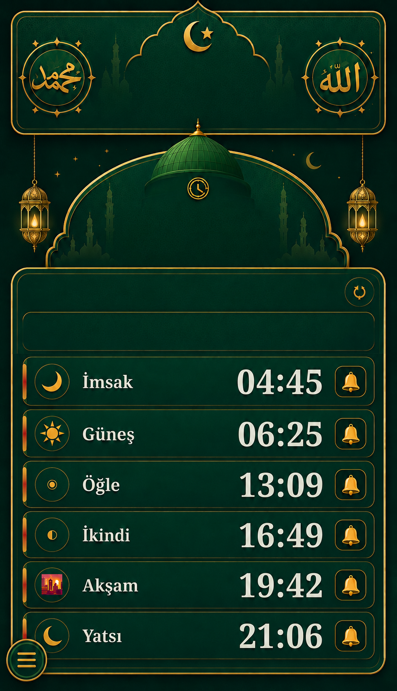

☾ Hilâl
YÖNETİCİ
Silinmiş Hocalar
Silinen hoca hesaplarını buradan yeniden aktif edebilirsiniz.
YÖNETİCİ BİLDİRİMLERİ
Hesap Açma Mesajları
Silinen hocaların hesap açma mesajları.
KİŞİSEL İBADET TAKİBİ
Günlük Virdlerim
Virdlerinizi, görsellerinizi ve PDF notlarınızı tek yerde tutun. Bu alan kişiye özeldir; ekledikleriniz yalnızca sizin hesabınızda görünür.
📿 Günlük Virdlerim
SÜNNETİ HAYATA TAŞI
🌿 Sünneti İhya
Bu bölüm, Peygamber Efendimiz Hz. Muhammed ﷺ'in sünnetlerini hayatımızda yaşatmak ve ihya etmek için hazırlanmıştır.
Aşağıdaki sünnetlerden yapabileceğinizi seçebilir; “Ben bu sünneti ömür boyu yaşatacağım” diyerek o sünneti üzerinize alabilirsiniz.
Bir kişi birden fazla sünnet alabilir; her sünnet ise ihya zincirinde yalnızca bir kişi tarafından alınır.
CÜZ 1 • TAM LİSTE
4.000 Sünnet-i Seniyye
Cüz 1 hedefi tamamlandı • 4.000 madde yüklü
0/4000
HİCRÎ TAKVİM
8 Rebiülevvel 1448
21 Ağustos 2026 Cuma
📅 Bugünün Tarihi
Hicrî
8 / 3 / 1448Miladî
21 / 08 / 2026NAMAZ VAKİTLERİ
⌖ Konum belirleniyor…
الله
Vakitler güncel tarih için otomatik yenilenir.

محمد
ﷺ
الله
جل جلاله
HİCRÎ TAKVİM
--
--
Vaktin Çıkmasına
--:--:--
Konum hazırlanıyor
◆ NAMAZ MÜMİNİN MİRACIDIR ◆
NAMAZ VAKTİ BİLDİRİMLERİ
🔊 Bildirim sesi
Kısa ve sade uyarı tonu
✤ “Namaz, müminin mirâcıdır.” ✤
(Hadis-i Şerif)
(Hadis-i Şerif)
HOCA SEÇİMİ
Hocalar
Tüm hocaların duyuru ve yayınları gösteriliyor.
HOCA PANELİ
👥 Takip Edenlerim
Sizi takip eden kullanıcıları ve içeriklerinizi beğenenleri burada görebilirsiniz. Misafir kullanıcılar takip edilmez; yalnızca hocalar arasında takip yapılabilir.
TAKİPÇİLERE ÖZEL • ONAYSIZ DİREKT YAYIN
🤲 Hatim • Dua • Zikir Katılımı
Takipçilerinize hatim, dua, zikir veya sûre çalışması başlatın.
HOCA PANELİ
🗂️ Duyurularım
Sadece size ait duyurular burada görünür. Taslak, onay bekleyen, reddedilen ve yayınlanmış kayıtlarınız genel duyurulardan ayrıdır.
📌 Hoca Duyuruları
Yeni duyuru ekleyebilir, kendi duyurularınızı düzenleyebilir ve durumlarını takip edebilirsiniz.
HOCA PANELİ
📚 Yayınlarım
Burada yalnızca kendi oluşturduğun yayınları görür ve yönetirsin. Yönetici onayından geçen yayınların otomatik olarak Genel Yayınlar akışında görünür.
📚 Kendi Yayınlarım
Taslak, onay bekleyen ve yayınlanmış kendi kayıtların.
MİSAFİR PANELİ
👥 Takip Ettiklerim
Takip ettiğiniz hocaların yalnız takipçilerine özel paylaştığı duyuru ve yayınlar sadece burada görünür. Yeni özel paylaşım yapıldığında bu liste otomatik güncellenir.
HOCA SEÇİMİ
Hocalar
Tüm hocaların yayınları gösteriliyor.
⭐ Favoriler
Kaydettiğin yayınlar burada olacak.
YÖNETİCİ PANELİ
📣 Duyuru Yönetimi
Hoca duyurularını incele, onayla, pasife al veya yeniden aktif et. Yayınlar ayrı Yayınlar Yönetimi bölümündedir.
YÖNETİCİ PANELİ
📚 Yayınlar Yönetimi
Hocaların gönderdiği yayınları incele. Onaylanan yayınlar Genel Yayınlar bölümünde misafir ve hoca hesaplarında görünür.
YÖNETİCİ PANELİ
🌙 Hicrî Günlük İçerikler
Hicrî ay ve güne göre sabit günlük içerikler oluştur. Yıl seçilmez; örneğin 1 Muharrem kaydı her yıl 1 Muharrem'de kullanılır.
📚 Kayıtlı Günlük İçerikler
🌙 12 Hicrî Ay
Ayı açın, ardından günü seçin
YÖNETİCİ PANELİ
🛡️ Onay Bekleyen Hocalar
Onayladığın hocalar ana ekrandan kalkar ve üç nokta menüsündeki Onaylanan Hocalar bölümüne taşınır.
Bekleyen Hoca
0
📚 Onay Bekleyen Hocalar
Alfabetik sıralı
YÖNETİCİ PANELİ
⏸️ Pasife Alınan Hocalar
Pasife alınan hocalar ve mesajlaşmalar burada yönetilir.
YÖNETİCİ PANELİ
📚 Onaylanan Hocalar
Onaylanan hoca kayıtları alfabetik sıralanır.
YÖNETİCİ PANELİ
🛡️ Yetki Paneli
Onaylı hocaları ad-soyad veya benzersiz ID ile bulun, yalnızca ihtiyaç duydukları yönetim yetkilerini verin.
YETKİLİ HOCA
🛡️ Yetkilendirildiklerim
Yönetici tarafından size verilen yönetim yetkileri burada görünür.
İLETİŞİM MERKEZİ
💬 Öneri / Şikayet
Öneri, şikayet veya uygulamada gördüğünüz bir hatayı yönetime iletebilirsiniz.
✍️ Yeni Mesaj Gönder
İsteğe bağlı
📬 Gönderdiğim Mesajlar
Yönetici cevaplarını ve işlem durumunu buradan takip edebilirsiniz.
HESAP AYARLARI
⚙️ Ayarlar
Görünüm
🐍 Yılan Işık Kütüphanesi yükleniyor…